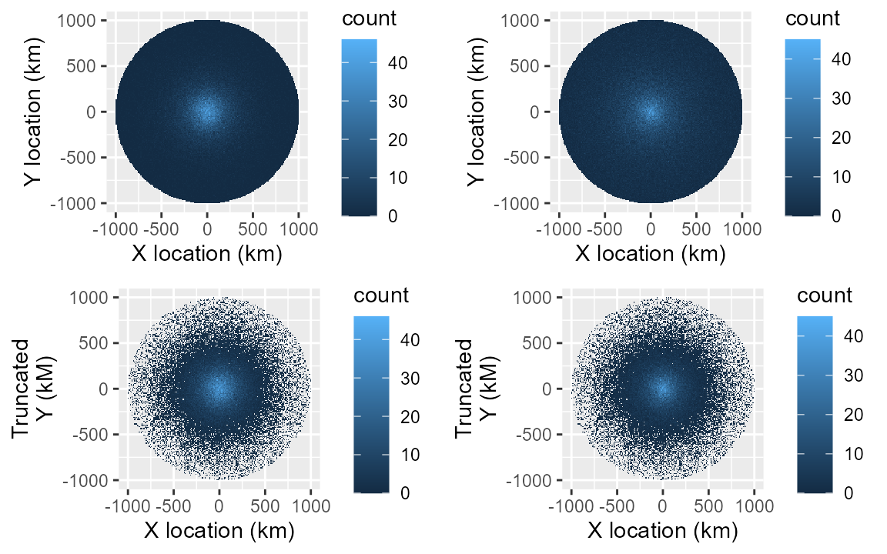
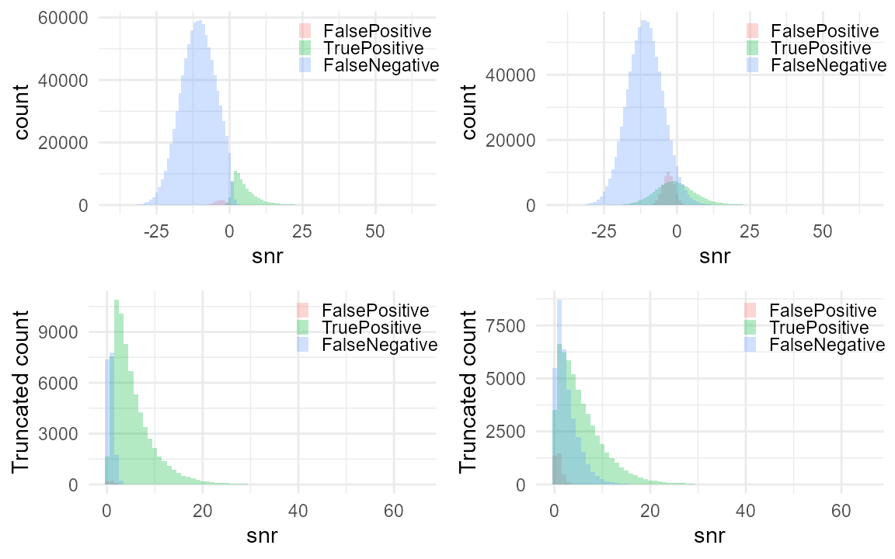

SNR truncation: fixing capture-recapture's blind spot
Source:vignettes/callDensity_snrThreshold.Rmd
callDensity_snrThreshold.RmdFurther exploration and topics in callDensity package (TODO)
- Spatial distribution of calls
- Effect of land, ice, and other zero-probability areas
- Effect of non-uniform distribution of calls in area (clustered/concentrated)
- Truncation in SNR
- Detectors with different slopes
- Minimum number of recaptures/effort required to get a reliable estimate
- More realistic Transmission Loss models and effects of mismatch
As usual, we start with the density equation:
where: is call density, is number of calls, is false discovery rate, is number of sensors (here always 1), is the duration of data analysed (in hours), is the probability of detection in the study area, and is the study area (in km^2).
Effects of truncation in SNR
Scenario: Antarctic blue whales in a quiet ocean with spherical spreading of sounds.
In this example, we investigate the effects of excluding detections with an SNR that are below a threshold value.
n = 1e6; # number of simulated calls (regardless of whether detected or not);
R = 1e6; # radius of 1000 km (but in m)
k <- 1 # number of sensors
minDate <- as.POSIXct("2025-01-01")
maxDate <- as.POSIXct("2026-01-01")
Time <- as.numeric(difftime(maxDate,minDate,unit="days"))/365 # in years
# Call density, D_c is n/A
A = studyArea(R/1e3) # Circular study area in km^2
TrueCallDensity = n/(A*Time) # calls/km^2/time
# 1) Generate n uniformly distributed calls within radius R and time period Time
sim <- simCallLocation(n=n, R=R, minDate=minDate, maxDate=maxDate)Sonar equation parameters for this scenario:
SL <- data.frame(mean=190, sd=4, sampleSize=350) # True SL distribution for sim
NL = data.frame(mean=84, sd = 4, sampleSize = n) # True NL distribution for sim
tlFunc <- function(r)20*log10(r)
# Simulate the true acoustic properties of each call and false positive
sim <- simCallAcoustics(sim, SL, NL, TL = tlFunc)
# Per-transect estimate of TL (used by callDensity package to estimate pDet)
TL <- simTLradials_20logR(maxRange=R, rangeStep=100, numTransects=8)Simulate detectors:
#Specify parameters for detector 1
# This is the "steep partner" scenario from the truncation sweep further
# below: a narrow transition (small scale) means detector 1 behaves almost
# like a hard threshold, contributing no recaptures across a wide low-SNR
# range. That absence of recaptures is exactly what breaks capture-recapture
# without truncation, and what this vignette now uses as its running example.
#
# fpMean is set below the detector's own true-detection SNR, and fpSD
# narrower than the true-detection spread, matching the qualitative pattern
# in Miller et al. (2026) Figure 3: false positives concentrate at lower SNR
# than true positives, in a visibly narrower band. Not fitted to that data --
# these values are chosen to capture the shape, not the exact distribution.
det1params = data.frame(
location=1, # AKA intercept?
scale=0.5, # AKA slope? -- steep partner
func='plogis', # logistic function
c=0.1, # False discovery rate
fpMean=-3, # Mean of distribution of false positives (in dB SNR)
fpSD = 2 # Standard deviation false positive distribution (in dB SNR)
)
# Detector 2 is the detector actually being characterised. A wide, gradual
# transition (large scale) means it degrades smoothly across a broad SNR
# range -- an easy detector to estimate on its own, but one whose curve is
# only correctly identifiable where detector 1 also contributes recaptures.
det2params = data.frame(
location=2, # AKA intercept?
scale=4, # AKA slope?
func='plogis', # logistic function
c=0.3, # False discovery rate
fpMean=-3, # Mean of distribution of false positives (in dB SNR)
fpSD = 2 # Standard deviation false positive distribution (in dB SNR)
)Now we create a function that will take the detector parameters above and simulate the detection process. We then call this function with each set of parameters to create a simulation for each detector.
# Simulate two detectors each with the different parameters
simDet1<- simulateDetector(det1params,sim)
simDet2<- simulateDetector(det2params,sim)SNR Truncation
Apply SNR truncation to the detectors by removing all detections that were less than the threshold.
snrTruncationThreshold <- 0; # dB
# True number of calls above threshold
nAboveThreshold <- sum(sim$snr>snrTruncationThreshold)
# Variables from sims that were truncated in SNR get a 't' as a suffix
simDet1t <- subset(simDet1, simDet1$snr >= snrTruncationThreshold)
simDet2t <- subset(simDet2, simDet2$snr >= snrTruncationThreshold)
# Number of detections above threshold for each detector
Nc1 <- sum(simDet1t$detect_table)
Nc2 <- sum(simDet2t$detect_table)View the spatial detection density (which is not the same as spatial call density since it accounts for neither detection probability nor time).
p1 <- plotSpatialDetections(simDet1)
p2 <- plotSpatialDetections(simDet2)
p1t <- plotSpatialDetections(simDet1t)+ylab("Truncated\nY (kM)")
p2t <- plotSpatialDetections(simDet2t)+ylab("Truncated\nY (kM)")
gridExtra::grid.arrange(p1,p2,p1t,p2t,nrow=2)
dist1 <- plotDetectionDistribution(simDet1)
dist2 <- plotDetectionDistribution(simDet2)
dist1t<- plotDetectionDistribution(simDet1t)+ylab("Truncated count")
dist2t<- plotDetectionDistribution(simDet2t)+ylab("Truncated count")
gridExtra::grid.arrange(dist1,dist2,dist1t,dist2t,nrow=2)
Subsample data for detector characterisation
Castro et al. (2024) subsample approximately 200 hours evenly spaced throughout the year to create detector characterisation curves (detection vs SNR). Here we subsample 1 hour in every 41 hours yielding 214 subsamples that are 1 hour in duration.
subsampleDet1 <- subsampleSimInTime(simDet1,interval = "23 hour")
subsampleDet2 <- subsampleSimInTime(simDet2,interval = "23 hour")
subsampleDet1t <- subsampleSimInTime(simDet1t,interval = "23 hour")
subsampleDet2t <- subsampleSimInTime(simDet2t,interval = "23 hour")
print(paste("True positives in original subsample of detector 1: ",
with(subsampleDet1,sum(groundTruth & detect_table)) ) )
#> [1] "True positives in original subsample of detector 1: 3301"
print(paste("True positives in truncated subsample of detector 1: ",
with(subsampleDet1t,sum(groundTruth & detect_table)) ) )
#> [1] "True positives in truncated subsample of detector 1: 3238"
print(paste("True positives in original subsample of detector 2: ",
with(subsampleDet2,sum(groundTruth & detect_table)) ) )
#> [1] "True positives in original subsample of detector 2: 5400"
print(paste("True positives in truncated subsample of detector 2: ",
with(subsampleDet2t,sum(groundTruth & detect_table)) ) )
#> [1] "True positives in truncated subsample of detector 2: 2439"Detection matching between detector 1 and 2
Both detectors (simulated subsets) operate on the same set of calls (i.e. they are different subsets of the same underlying simulation). So we can find detections from one detector that match those of the other detector by merging the detections into a capture history table.
Presently, false positives have randomly generated date-times, so have a negligible chance of matching between the two detectors.
TODO: Create false positives in a way that better approximates their real-world occurrence (i.e. in a way that allows them to be matched between detectors).
# Create a capture history table from the two tables of detections (All
# simulated calls in the subset whether detected or not)
capHistTab<- simsTocaptureHistoryTable(subsampleDet1,subsampleDet2)
capHistTabt<- simsTocaptureHistoryTable(subsampleDet1t,subsampleDet2t)
# Total number of true positive detections for detector1 OR detector2
nTrueDetectedSubset <- with(capHistTab,sum(detect_table1 & groundTruth1 |
detect_table2 & groundTruth2) )
nTrueDetectedSubsett <- with(capHistTabt,sum(detect_table1 & groundTruth1 |
detect_table2 & groundTruth2) )
# Total number of positive detections for detector1 OR detector2
nPositiveSubset <- with(capHistTab,sum(detect_table1 | detect_table2))
nPositiveSubsett <- with(capHistTabt,sum(detect_table1 | detect_table2))Convert this capture history table into an SNRinfo table, and treat detector1 as ground truth.
# Convert capture history into SNRinfo format (removing detections )
SNRinfo <- capHistTosnrInfo(capHistTab)
SNRinfot<- capHistTosnrInfo(capHistTabt)
# Detector 2 true & false positives
n_p_subsampleDet2 <- sum(capHistTab$detect_table2)
n_p_subsampleDet2t <- sum(capHistTabt$detect_table2)
# Detectir 2 false positives (Positive on detector 2, but not on 1)
n_fp_subsample <- sum(capHistTab$detect_table2 & !capHistTab$detect_table1)
n_fp_subsamplet <- sum(capHistTabt$detect_table2 & !capHistTabt$detect_table1)
# False discovery rate is number.false.positives/number.predicted.positive
c_subsample <- n_fp_subsample/n_p_subsampleDet2
c_subsamplet<- n_fp_subsamplet/n_p_subsampleDet2t
n_subsample <- dim(SNRinfo)[1] # Number positive detections in SUBset
n_subsamplet <- dim(SNRinfot)[1] # Number positive detections in SUBset
truncationDistances <- R
# Number positive detections in FULL set
Nc <- sum(simDet2$detect_table)
Nct <- sum(simDet2t$detect_table) Calculate call densities
This vignette assumes adjudicated capture-recapture (CR) as the
working method throughout, and does not cover the observer-ground (OG)
design at all. OG requires a single, essentially false-positive-free
ground-truth observer – callDensity_CommonGround shows
directly why that assumption is fragile in practice, and why CR is
generally the more robust choice once ground truth is imperfect. Given
that, this vignette jumps straight to CR and its own particular failure
mode: certain combinations of detector shape and propagation geometry
create SNR ranges with no recapture coverage, biasing p_a
and Dc in ways that are not obvious from the data alone.
SNR truncation is the fix.
Density is calculated via cde() directly here – the same
interface an end user would call – rather than by combining
pDetInArea() with a hand-rolled density formula. Two things
follow from that. First, cde() computes CV.pa,
CV.c, CV.Nc and CV.Dc as a matter
of course, so every result below carries its own uncertainty rather than
a bare point estimate – worth checking against before judging whether
any gap from the true value is a concern or expected Monte Carlo noise.
Second, cde() always truncates c and zeroes
p_a together whenever snrTruncationThreshold
is set, and refuses to run with a threshold set unless Nc
is confirmed truncated to match (NcIsTruncated = TRUE) –
truncating the detection function alone, without truncating
c, Nc and p_a consistently, is no
longer something cde() will let happen by accident.
Detection function via VGLM (adjudicated capture-recapture)
Capture-recapture with two fallible observers means neither
detect_table1 nor detect_table2 is ground
truth on its own. cde()’s internal
falseDiscoveryRate()/capHist2snrInfo() calls
always read detect_table1 as ground truth regardless – this
is not something cde() lets a caller override – so that
assumption has to be satisfied by construction before the table reaches
cde(). The fix is the same one the actual Common Ground
manuscript’s own analysis script uses (mchToCR()):
overwrite detect_table1 with the adjudicator’s verdict.
Skipping this does not error – it silently computes a false discovery
rate for one observer against the other, which is not a meaningful
quantity and will not match the truth.
library(VGAM)
adjudicated <- subset(capHistTab,
(capHistTab$groundTruth1 | capHistTab$groundTruth2) &
(capHistTab$detect_table1 | capHistTab$detect_table2))
adjudicatedt <- subset(capHistTabt,
(capHistTabt$groundTruth1 | capHistTabt$groundTruth2) &
(capHistTabt$detect_table1 | capHistTabt$detect_table2))
adjudicatedt$SNR <- rowMeans(
subset(adjudicatedt, select = c("snr1", "snr2")), na.rm = TRUE)
observerNames <- c("detect_table1", "detect_table2")
# Fit on the sample matching each analysis's own threshold, so the curve and
# the rest of the calculation describe the same set of detections -- the
# untruncated fit is exactly the one that extrapolates into the low-SNR
# desert with no recaptures, and the truncated fit is exactly the one that
# does not.
snrDetFun.vglmNone <- fitSNRvglm(adjudicated, observerNames,
whichObserver = "detect_table2")
snrDetFun.vglmt <- fitSNRvglm(adjudicatedt, observerNames,
whichObserver = "detect_table2")
# detect_table1 overwritten with the true simulated status -- the synthetic
# equivalent of a judge's adjudication -- so cde()'s ground-truth assumption
# is satisfied. Only affects the copy handed to cde(); the vglm fits above
# already used the genuine two-observer columns.
capHistTabForCde <- capHistTab
capHistTabForCde$detect_table1 <- capHistTabForCde$groundTruth2
capHistTabtForCde <- capHistTabt
capHistTabtForCde$detect_table1 <- capHistTabtForCde$groundTruth2
cr.none <- cde(Nc = Nc, capHistTab = capHistTabForCde, snrDetFun = snrDetFun.vglmNone,
SL = SL, TL = TL, NL = NL, T = Time, A = A, k = k,
outerloop = 10, truncationDistance = R,
snrTruncationThreshold = -Inf)
cr.trunc <- cde(Nc = Nct, capHistTab = capHistTabtForCde, snrDetFun = snrDetFun.vglmt,
SL = SL, TL = TL, NL = NL, T = Time, A = A, k = k,
outerloop = 10, truncationDistance = R,
snrTruncationThreshold = snrTruncationThreshold,
NcIsTruncated = TRUE)
resultsTrue <- data.frame(Dc = TrueCallDensity, Nc = n,
pa = mean(simDet2$p_det, na.rm = TRUE),
c = det2params$c, CV.pa = NA, CV.Dc = NA,
row.names = "Truth")
resultsAll <- rbind(
resultsTrue,
data.frame(Dc = cr.none$Dc, Nc = cr.none$Nc, pa = cr.none$pa,
c = cr.none$c, CV.pa = cr.none$CV.pa, CV.Dc = cr.none$CV.Dc,
row.names = "All SNR"),
data.frame(Dc = cr.trunc$Dc, Nc = cr.trunc$Nc, pa = cr.trunc$pa,
c = cr.trunc$c, CV.pa = cr.trunc$CV.pa, CV.Dc = cr.trunc$CV.Dc,
row.names = paste("Truncated", snrTruncationThreshold, "dB"))
)
kableExtra::kbl(resultsAll, digits = c(4, 0, 4, 3, 3, 3),
col.names = c("Dc", "Nc", "P_a", "c", "CV.pa", "CV.Dc")) %>%
kableExtra::kable_classic(full_width = FALSE)| Dc | Nc | P_a | c | CV.pa | CV.Dc | |
|---|---|---|---|---|---|---|
| Truth | 0.3183 | 1000000 | 0.1209 | 0.300 | NA | NA |
| All SNR | 0.2660 | 172931 | 0.1472 | 0.289 | 0.083 | 0.085 |
| Truncated 0 dB | 0.3221 | 57287 | 0.0533 | 0.058 | 0.053 | 0.095 |
Without truncation, capture-recapture badly overestimates
p_a and underestimates Dc – detector 1’s
steep, narrow curve leaves no recaptures across a wide low-SNR range, so
the fitted curve is extrapolating into territory the data never covered.
Truncating removes that extrapolated region and the bias should largely
resolve, landing Dc close to truth with the residual gap
sitting inside that row’s own CV.Dc.
The estimated c under truncation is noticeably lower
than the untruncated estimate, and that is expected rather than a sign
of a bug here – but it is not a general truth about truncation, and it
is worth being precise about why. False positives and true positives
have different SNR distributions in this simulation: false positives are
centred lower (fpMean = -3) and more tightly
(fpSD = 2) than true detections, which sit higher on
average and spread much wider (mean
-0.5, sd
7, driven by detector 2’s own gradual curve). Truncating at the chosen
threshold removes a large share of the false positives and comparatively
few of the true positives, so the false discovery rate measured on the
retained sample is genuinely lower than the untruncated rate –
not because c was miscounted, but because truncation
changes which false positives survive to be counted, given this
relationship between the two distributions.
That relationship is doing real work, and it will not hold in
general. There are two dimensions to it: whether false positives sit at
lower or higher SNR than true positives on average, and whether their
spread is narrower or wider. This example is one of four combinations –
FP lower and narrower – and it is the combination that makes truncation
look unambiguously good for c. Swap either dimension and
the effect on c could shrink, vanish, or reverse: false
positives sitting higher than true positives, or spread wider than true
positives, are both plausible for a real detector and would not behave
the same way under truncation. Which combination actually holds is an
empirical question about the detector and the noise environment, not
something truncation can be assumed to fix by default. The other three
combinations are left unexplored here.
This matters practically: a truncated c is not
comparable to an untruncated one, and should not be compared across
analyses that use different thresholds without accounting for this.
falseDiscoveryRate() truncates c consistently
with Nc and p_a for this reason – the three
terms must describe the same underlying set of detections, or the
cancellation below breaks down.
Why this works: the cancellation
This means applying SNR truncation when tabulating the number of calls, Nc; when estimating the density of calls within the area, pa; as well as applying SNR truncation when estimating the false discovery rate, c.
Applying SNR truncation in this way returns the density of
all calls, not the density of above-threshold calls,
provided the truncation is applied consistently to every term that
counts detections – exactly what cde() now enforces via the
NcIsTruncated guard and its own internal handling of
c and p_a. This is not obvious, and it is
worth being explicit about why.
Let
be the fraction of calls that arrive at the sensor with an SNR above the
threshold
.
Truncation shrinks
by a factor of roughly
,
because we are counting fewer detections. It shrinks
by the same factor, because pDetInArea sets the probability
of detection to zero below
rather than discarding those parts of the area. The two factors appear
on opposite sides of the density equation, so they cancel, and
is unchanged.
The cancellation only happens if
is the unconditional mean
rather than the conditional mean
.
That is the difference between setting below-threshold cells to zero and
dropping them. Zeroing keeps them in the average and they contribute
nothing; dropping them renormalises the average over the survivors,
which would give the density of above-threshold calls instead.
pDetInArea zeroes them.
Distance truncation is not treated the same way, and must not be. Beyond the truncation distance the study area is redefined as , so that area genuinely leaves the question and those cells are dropped. Calls below have not left the question. They are still in the water and still in . We have only declared that we cannot hear them.
Applying truncation throughout all the terms of the call density equation produces a correct estimate of the density of all calls. The estimate is not of a different quantity from the untruncated one; it is the same quantity, reached by discarding the part of the detection function that the data could never support.
The earlier concern that these densities would only be comparable across sites using identical thresholds does not apply once cancels. Two sites truncated at different thresholds both return all-call density, and are directly comparable. What they do not share is precision: the site with the higher threshold has a smaller .
What truncation does do is move an assumption from one place to another. Without truncation, depends on the shape of the detection function at SNRs where no observer ever contributed a detection. That shape is not measurable, even in principle. With truncation, depends instead on , which comes from SL, TL and NL. That is the sonar equation, which is already the backbone of the method, and which can be checked against independent measurements. Truncation creates no information about faint calls. It relocates the assumption onto ground that can be inspected.
The cost is precision, and it is not small. shrinks with , and the truncated estimate is more sensitive to error in SL, NL and TL than the untruncated one, because now carries weight that the detection function used to carry. Sensitivity to acoustic parameter mismatch is left as an open question and remains on the TODO list.
An earlier draft of this vignette proposed tracking the proportion of calls excluded by truncation, and scaling the above-threshold density back up to recover all-call density. That proportion is , and zeroing obtains it for free. No bookkeeping is required, and none was added.
Choosing the threshold
The threshold is not a free parameter to be tuned until the answer looks right. It has a meaning, and the meaning tells you where to put it.
A capture-recapture model identifies detection probability from disagreement between observers. It needs both observers to contribute detections across the SNR range that matters. Where only one observer ever contributes, there are no recaptures, and the model is not estimating anything there. It is extrapolating.
The temptation is to set the threshold where the sample runs out. That is the wrong diagnostic. A shallow partner can reach a long way down on its own and fill the sample with low-SNR detections, none of which are recaptures. The sample looks well covered and the model is still extrapolating.
The requirement is a property of the partner’s slope, not its recall. A partner with a steep detection function behaves like a step function: above its threshold it hears everything, below it nothing, and the faint region has no recaptures at any recall. A mediocre partner that degrades gradually is more useful for capture-recapture than a sharp one, however good the sharp one is. An SNR-insensitive CNN is close to an ideal partner. A hard energy threshold is close to a worst case.
So set where the recaptures run out. That is measurable directly from the capture history table, before any call density is estimated:
# Recapture coverage: the SNR range over which BOTH observers contribute
# detections. Not where the sample reaches; where the agreement reaches.
recaptureCoverage <- function(ch, breaks = seq(-20, 20, by = 2),
obs1 = "detect_table1", obs2 = "detect_table2",
snrCol = "SNR") {
# Only calls somebody flagged are in the capture-recapture sample.
ch <- ch[ch[[obs1]] | ch[[obs2]], ]
bin <- cut(ch[[snrCol]], breaks = breaks)
mid <- head(breaks, -1) + diff(breaks) / 2
data.frame(
snr = mid,
det1only = as.vector(tapply(ch[[obs1]] & !ch[[obs2]], bin, sum, default = 0)),
det2only = as.vector(tapply(!ch[[obs1]] & ch[[obs2]], bin, sum, default = 0)),
recaptures = as.vector(tapply(ch[[obs1]] & ch[[obs2]], bin, sum, default = 0))
)
}
coverage <- recaptureCoverage(capHistTab)
print(subset(coverage, det1only + det2only + recaptures > 0), row.names = FALSE)
#> snr det1only det2only recaptures
#> -19 0 10 0
#> -17 0 30 0
#> -15 0 46 0
#> -13 0 131 0
#> -11 0 206 0
#> -9 2 327 0
#> -7 23 529 0
#> -5 91 1064 0
#> -3 131 1502 0
#> -1 117 1142 30
#> 1 379 431 263
#> 3 413 33 514
#> 5 207 0 364
#> 7 96 0 318
#> 9 31 0 220
#> 11 14 0 142
#> 13 6 0 117
#> 15 3 0 58
#> 17 1 0 43
#> 19 0 0 25Read down the recaptures column. Where it reaches zero
while det2only is still large, detector 1 has stopped
contributing, and the model has nothing to work with below that point.
That is where
belongs.
For the steep partner used below, recaptures are zero in every bin below about dB, while detector 2 alone contributes hundreds of detections per bin. The sample is well populated down to dB and none of it is informative. Recaptures only become substantial at dB.
That is worth dwelling on, because it is the argument for the diagnostic. The threshold it points at, near 0 dB, is the same threshold the sweep in the next section shows to remove the bias. The diagnostic reaches it from the capture history table alone, without knowing the true call density and without fitting anything. In a real analysis the truth is not available and the sweep cannot be run, so this is the only version of the question that can actually be asked.
Does it work?
The failure that motivates truncation is a steep partner. With
detector 1 at scale = 0.5 and detector 2 at
scale = 4, capture-recapture overestimates
by about 60% and therefore underestimates
by the reciprocal. Truncating removes the extrapolated region and the
bias goes away, while
remains the density of all calls:
library(VGAM)
#' Simulate two detectors on the same calls, return everything needed for one
#' sweep cell. Self-contained -- built only from exported callDensity
#' functions, not the tests/testthat/helper-fixtures.R fixture of the same
#' name, since a vignette must knit against the installed package alone.
simulateTwoDetectors <- function(seed, det1scale, n = 5e4,
det1location = 1, det2location = 2,
det2scale = 4, fdr = 0,
nlMean = 84, nlSd = 4) {
set.seed(seed)
R <- 1e6
minDate <- as.POSIXct("2025-01-01")
maxDate <- as.POSIXct("2026-01-01")
simTime <- as.numeric(difftime(maxDate, minDate, unit = "days")) / 365
simSL <- data.frame(mean = 190, sd = 4, sampleSize = 350)
simNL <- data.frame(mean = nlMean, sd = nlSd, sampleSize = n)
det1params <- data.frame(location = det1location, scale = det1scale,
func = "plogis", c = fdr, fpMean = 0, fpSD = 2)
det2params <- data.frame(location = det2location, scale = det2scale,
func = "plogis", c = fdr, fpMean = 0, fpSD = 2)
tlFunc <- function(r) 20 * log10(r)
simPop <- simCallLocation(n = n, R = R, minDate = minDate, maxDate = maxDate)
simPop <- simCallAcoustics(simPop, simSL, simNL, TL = tlFunc)
simDet1 <- simulateDetector(det1params, simPop)
simDet2 <- simulateDetector(det2params, simPop)
list(capHistTab = simsTocaptureHistoryTable(simDet1, simDet2),
SL = simSL, NL = simNL, R = R, A = studyArea(R / 1e3), Time = simTime,
Nc = sum(simDet2$detect_table),
truePa = mean(simDet2$p_det, na.rm = TRUE),
trueDc = n / (studyArea(R / 1e3) * simTime))
}
runCell <- function(theta, det1scale, seed, n = 5e4, outerloop = 10) {
RNGkind("Mersenne-Twister")
set.seed(seed)
d <- simulateTwoDetectors(seed = seed, det1scale = det1scale, n = n,
det1location = 1, det2location = 2,
det2scale = 4, fdr = 0)
ch <- d$capHistTab
# Spherical-spreading TL table, r = 0 and non-finite rows removed.
TL <- simTLradials_20logR(maxRange = 1e6, rangeStep = 2000, numTransects = 4)
TL <- TL[is.finite(rowSums(TL)) & TL[[1]] > 0, ]
# Truth for all calls. truePa is E[p2] over every call made.
truePa <- d$truePa
trueDc <- d$trueDc
# The estimand under truncation: E[p2 * 1(SNR >= theta)] over ALL calls.
# Not the mean over surviving calls. This is what a zeroed p_a targets.
truePaTrunc <- mean(ch$p_det2 * (ch$snr2 >= theta), na.rm = TRUE)
# Capture-recapture: the adjudicated set is every call at least one observer
# flagged, with false positives removed by the judge.
adj <- subset(ch, (ch$groundTruth1 | ch$groundTruth2) &
(ch$detect_table1 | ch$detect_table2))
if (is.finite(theta)) adj <- subset(adj, adj$SNR >= theta)
fit <- fitSNRvglm(adj, c("detect_table1", "detect_table2"),
whichObserver = "detect_table2")
# Nc must be truncated in step with p_a. cde() cannot do this itself -- it
# receives Nc as a number and never sees the detections -- so it must be
# confirmed via NcIsTruncated.
Nc <- sum(ch$detect_table2 & (if (is.finite(theta)) ch$SNR >= theta else TRUE),
na.rm = TRUE)
# cde()'s internal falseDiscoveryRate()/capHist2snrInfo() calls always read
# capHistTab$detect_table1 as ground truth and detect_table2 as the detector
# under test. Neither raw observer in a genuine two-observer capture-
# recapture setup IS ground truth, so build a copy with detect_table1
# overwritten by the simulated ground truth (groundTruth2), matching the
# real Common Ground manuscript's mchToCR() convention -- see the GLM/VGLM
# sections above for the same construction and its explanation.
chForCde <- ch
chForCde$detect_table1 <- chForCde$groundTruth2
result <- suppressWarnings(suppressMessages(
cde(Nc = Nc, capHistTab = chForCde, snrDetFun = fit,
SL = d$SL, TL = TL, NL = d$NL, T = d$Time, A = d$A, k = 1,
outerloop = outerloop,
truncationDistance = d$R,
snrTruncationThreshold = theta,
NcIsTruncated = is.finite(theta))
))
pa <- result$pa
Dc <- result$Dc
data.frame(theta = theta, det1scale = det1scale, seed = seed,
Nc = Nc,
truePa = if (is.finite(theta)) truePaTrunc else truePa,
pa = pa,
paFraction = pa / (if (is.finite(theta)) truePaTrunc else truePa),
trueDc = trueDc, Dc = Dc, DcFraction = Dc / trueDc)
}
grid <- expand.grid(theta = c(-Inf, 0, 3, 6),
det1scale = c(0.5, 8),
seed = 11:13)
sweepRes <- do.call(rbind, Map(runCell, grid$theta, grid$det1scale, grid$seed))
sweepSummary <- aggregate(cbind(paFraction, DcFraction, Nc) ~ theta + det1scale,
data = sweepRes, FUN = mean)
sweepSummary <- sweepSummary[order(sweepSummary$det1scale, sweepSummary$theta), ]
sweepSummary$partner <- ifelse(sweepSummary$det1scale == 0.5,
"steep (scale = 0.5)", "shallow (scale = 8)")
sweepSummary$thetaLabel <- ifelse(is.infinite(sweepSummary$theta), "none",
paste(sweepSummary$theta, "dB"))
kableExtra::kbl(sweepSummary[, c("partner", "thetaLabel", "Nc", "paFraction", "DcFraction")],
digits = c(NA, NA, 0, 2, 2), row.names = FALSE,
col.names = c("partner", "$\\theta$", "$N_c$",
"$p_a$ / true $p_a$", "$D_c$ / true $D_c$")) %>%
kableExtra::kable_classic(full_width = FALSE)| partner | / true | / true | ||
|---|---|---|---|---|
| steep (scale = 0.5) | none | 6055 | 1.66 | 0.60 |
| steep (scale = 0.5) | 0 dB | 2735 | 1.02 | 0.99 |
| steep (scale = 0.5) | 3 dB | 1741 | 1.00 | 1.01 |
| steep (scale = 0.5) | 6 dB | 994 | 1.02 | 0.99 |
| shallow (scale = 8) | none | 6051 | 0.99 | 1.01 |
| shallow (scale = 8) | 0 dB | 2699 | 1.01 | 0.99 |
| shallow (scale = 8) | 3 dB | 1735 | 1.00 | 1.01 |
| shallow (scale = 8) | 6 dB | 1001 | 1.03 | 0.99 |
Mean of three seeds per cell, 50,000 calls, false discovery rate zero, noise supplied.
Three things in that table are worth stating plainly.
stays at the true all-call density while falls six-fold from 6055 to 994. That is the cancellation working. If were renormalised instead of zeroed, would fall with .
Truncation does not damage the case that already worked. The shallow partner is unbiased with or without it, so the threshold costs precision and buys nothing there.
The threshold does not need to be tuned. Anywhere from 0 to 6 dB fixes the steep partner. The bias is caused by a region of the curve that carries no data, and any threshold that excludes that region works. This matters in practice, because it means can be chosen from the recapture diagnostic above without reference to the answer it produces.
One practical note. Fitting the untruncated VGLM in the steep-partner
case emits convergence warnings from posbernoulli.t about
working weights and half-step sizes. Those warnings are the symptom, not
a separate problem: the model is being asked to fit a region where it
has no information. They disappear under truncation.
Inspect detection functions for insights
This is the mechanism behind the bias in the table above, and behind the fix: the untruncated fit has to extrapolate through a region with no recaptures, and the truncated fit does not have to extrapolate there at all, because that region is simply not part of its estimand.
The three curves below are deliberately not drawn over the same
range. TRUE is the actual generating function, so it is
shown everywhere – there is no reason to hide ground truth just because
a fitted curve does not reach that far. The untruncated fit is shown
extrapolated across the same full range, because that is exactly what
happens when it is used without truncation: it is applied everywhere,
confidently and wrongly, in the region with no recaptures. The truncated
fit is shown only where it has data, stopping at the threshold,
because that is what the fit actually is – pDetInArea never
extrapolates it below the threshold either, it zeroes that region
outright rather than trusting an unsupported continuation. Drawing the
truncated curve extending below its own threshold, as if it had an
opinion about that region, would misrepresent what the model was fit on
and what the calculation actually does with it.
fullGrid <- data.frame(SNR = seq(-20, 20, 0.5))
truncGrid <- data.frame(SNR = seq(snrTruncationThreshold, 20, 0.5))
trueCurve <- data.frame(SNR = fullGrid$SNR,
fit = plogis(fullGrid$SNR, location = det2params$location,
scale = det2params$scale),
curve = "TRUE")
noneCurve <- data.frame(SNR = fullGrid$SNR,
fit = predictDetFun(snrDetFun.vglmNone, newdata = fullGrid)$fit,
curve = "VGLM, no truncation")
truncCurve <- data.frame(SNR = truncGrid$SNR,
fit = predictDetFun(snrDetFun.vglmt, newdata = truncGrid)$fit,
curve = "VGLM, truncated")
detFunComparison <- rbind(trueCurve, noneCurve, truncCurve)
detFunComparison$curve <- factor(detFunComparison$curve,
levels = c("TRUE", "VGLM, no truncation", "VGLM, truncated"))
ggplot2::ggplot(detFunComparison, ggplot2::aes(SNR, fit, colour = curve, linetype = curve)) +
ggplot2::geom_vline(xintercept = snrTruncationThreshold, colour = "black",
linewidth = 0.6) +
ggplot2::geom_line(linewidth = 1) +
ggplot2::scale_colour_manual(values = c("TRUE" = "black",
"VGLM, no truncation" = "#D95319",
"VGLM, truncated" = "#0072BD")) +
ggplot2::scale_linetype_manual(values = c("TRUE" = "solid",
"VGLM, no truncation" = "solid",
"VGLM, truncated" = "dashed")) +
ggplot2::coord_cartesian(xlim = c(-5, 10), ylim = c(0, 1)) +
ggplot2::labs(x = "SNR (dB)", y = "P(Detection)", colour = NULL, linetype = NULL) +
ggplot2::theme_bw()